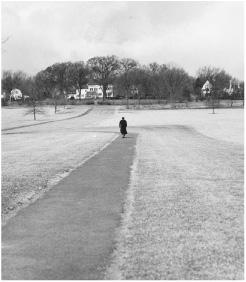
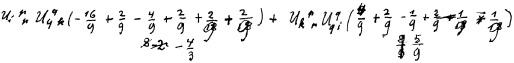

爱因斯坦在普林斯顿
For his seventy-fifth birthday in March 1954, Einstein received from a medical center, unsolicited, a pet parrot that was delivered in a box to his doorstep. It had been a difficult journey, and the parrot seemed traumatized. At the time, Einstein was seeing a woman who worked in one of Princeton University’s libraries named Johanna Fantova, whom he had met back in Germany in the 1920s. “The pet parrot is depressed after his traumatic delivery and Einstein is trying to cheer him up with his jokes, which the bird doesn’t seem to appreciate,” she wrote in the wonderful journal she kept of their dates and conversations.1
1954年3月，为了祝贺爱因斯坦75岁生日，一个医学中心送给他一只鹦鹉，爱因斯坦给它取名“毕波”。这次迀居很艰难，毕波似乎受到了惊吓。当时，爱因斯坦正在接见一位在普林斯顿大学图书馆工作的妇女约翰娜·范托娃，20世纪20年代他们曾在德国见过面。“这只鹦鹉被送来之后一直精神不振，爱因斯坦试图用笑话逗它开心，但它似乎无动于衷。”范托娃在日记中记下了他们的会谈。
The parrot rebounded psychologically and was soon eating out of Einstein’s hand, but it developed an infection. That necessitated a series of injections, and Einstein worried that the bird would not survive. But it was a tough bird, and after only two injections he bounced back.
在爱因斯坦的照料下，毕波的精神总算恢复了，不久便可以进食。不过它患了传染病，需要打几次针，爱因斯坦担心它支持不下去。但毕波是一只坚强的鸟，打了两针后就恢复了健康。
Einstein likewise had repeatedly bounced back from bouts of anemia and stomach ailments. But he knew that the aneurysm on his abdominal aorta should soon prove fatal, and he began to display a peaceful sense of his own mortality. When he stood at the graveside and eulogized the physicist Rudolf Ladenberg, who had been his colleague in Berlin and then Princeton, the words seemed to be ones he felt personally. “Brief is this existence, as a fleeting visit in a strange house,” he said. “The path to be pursued is poorly lit by a flickering consciousness.”2
爱因斯坦的贫血和胃病也时有反复。而且他知道，其腹部主动脉上的动脉瘤是致命的，他开始平静地对待自己的死亡。他在为柏林和普林斯顿的物理学家鲁道夫·拉登堡致悼词时，说的话似乎是感同身受。“人生短暂，宛如造访一间奇特的房子，又迅速离去，”他说，“所走的道路勉强被摇曳不定的意识照亮。”
He seemed to sense that this final transition he was going through was at once natural and somewhat spiritual. “The strange thing about growing old is that the intimate identification with the here and now is slowly lost,” he wrote his friend the queen mother of Belgium. “One feels transposed into infinity, more or less alone.”3
他似乎感到，生命中的最后这段时光既顺乎自然，又有些精神性。“奇怪的是，随着人的慢慢老去，他对眼前事物的亲密感渐渐失去，”他写信给比利时王后说，“人仿佛身陷于无穷，多少有些孤独。”
After his colleagues updated, as a seventy-fifth birthday gift, the music system they had given him five years earlier, Einstein began repeatedly to play an RCA Victor recording of Beethoven’s Missa Solemnis. It was an unusual choice for two reasons. He tended to regard Beethoven, who was not his favorite composer, as “too personal, almost naked.”4 Also, his religious instincts did not usually include these sorts of trappings. “I am a deeply religious nonbeliever,” he noted to a friend who had sent him birthday greetings. “This is a somewhat new kind of religion.”5
同事们将5年前送给爱因斯坦的音响做了更新，作为送给他的75岁生日礼物。他反复播放一张由RCA录制的贝多芬的《庄严弥撒》的唱片。选择这张唱片非比寻常，因为首先，贝多芬并不是他最喜欢的作曲家，他认为贝多芬“过于个人和直白”； 其次，他的宗教本能通常并不包括这些外部装饰。“我是一个非常虔诚的无信仰者，”他对一位送来生日祝福的朋友说，“这是一种新的宗教。”
It was time for reminiscing. When his old friends Conrad Habicht and Maurice Solovine wrote a postcard from Paris recalling their time together in Bern, more than a half century earlier, as members of their self-proclaimed Olympia Academy, Einstein replied with a paean addressed to that bygone institution: “Though somewhat decrepit, we still follow the solitary path of our life by your pure and inspiring light.” As he later lamented in another letter to Solovine, “The devil counts out the years conscientiously.”6
回忆往昔岁月可谓恰逢其时。老友哈比希特和索洛文从巴黎寄来了一张明信片，回忆起他们半个多世纪前在伯尔尼组建的所谓奥林匹亚科学院的日子。爱因斯坦在回信中对其大加颂扬：“虽然我们都已经有点老态龙钟，可是你所闪耀的明亮耀眼的光辉依然照耀着我们孤寂的人生道路。”他后来在另一封信中向索洛文悲叹道：“魔鬼正在细心点数着年头。”
Despite his stomach problems, he still loved to walk. Sometimes it was with Gödel to and from the Institute, at other times it was in the woods near Princeton with his stepdaughter Margot. Their relationship had become even closer, but their walks were usually enjoyed in silence. She noticed that he was becoming mellower, both personally and politically. His judgments were mild, even sweet, rather than harsh.7
虽然有胃病，但他仍然喜欢走路。有时他会和哥德尔一起走到研究院，或从那里回来，有时则会和玛戈特在普林斯顿近郊的树林里散步。他和玛戈特的关系变得更近了，但他们散步时通常不说什么话，似乎在享受着这种宁静。玛戈特注意到，无论是在个人方面还是在政治上，爱因斯坦都更加成熟稳重了。他所做的判断不再像以前那样尖刻，而是变得温和甚至是可爱。
He had, in particular, made his peace with Hans Albert. Shortly after he celebrated his seventy-fifth birthday, his son turned 50. Einstein, thanks to a reminder from his son’s wife, wrote him a letter that was slightly formal, as if created for a special occasion. But it contained a nice tribute both to his son and to the value of a life in science: “It is a joy for me to have a son who has inherited the main traits of my personality: the ability to rise above mere existence by sacrificing one’s self through the years for an impersonal goal.”8 That fall, Hans Albert came east for a visit.
特别是，他终于与汉斯·阿尔伯特和平共处了。就在他庆祝了75岁生日不久，汉斯·阿尔伯特也到了50岁。儿媳弗里达寄来了一个纪念品，爱因斯坦给汉斯·阿尔伯特写了一封较为正式的信表示感谢，就好像是专为某个特殊场合而写的。不过其中也对儿子以及科学生活的价值大加赞颂：“令我颇感欣慰的是，我的儿子继承了我的主要性格特点：能够数十年如一日地牺牲自我，追求一种非个人的目标，从而超越单纯的生存。” 那年秋天，汉斯·阿尔伯特去看望了爱因斯坦。
By then Einstein had finally discovered what was fundamental about America: it can be swept by waves of what may seem, to outsiders, to be dangerous political passions but are, instead, passing sentiments that are absorbed by its democracy and righted by its constitutional gyroscope. McCarthyism had died down, and Eisenhower had proved a calming influence. “God’s own country becomes stranger and stranger,” Einstein wrote Hans Albert that Christmas, “but somehow they manage to return to normality. Everything—even lunacy—is mass produced here. But everything goes out of fashion very quickly.”9
到那时，爱因斯坦终于发现了美国的一个基本原则：当美国被一些潮流所席卷时，局外人所看到的一些危险的政治激情，其实只是一时的情绪，可以被其民主制度所消解，被其宪法所纠正。麦卡锡主义已经渐渐销声匿迹，艾森豪威尔缓解了紧张局势。“上帝自己的国家变得越来越奇怪了，”他那年圣诞节给汉斯·阿尔伯特写信说，“但他们还是成功地恢复了正常。所有东西都在这里成批生产，甚至精神病。但任何东西很快就不再流行。”
Almost every day he continued to amble to the Institute to wrestle with his equations and try to push them a little closer toward the horizon of a unified field theory. He would come in with his new ideas, often clutching equations on scraps of paper he had scribbled the night before, and go over them with his assistant of that final year, Bruria Kaufman, a physicist from Israel.
他几乎每天都要到研究院研究他的方程，试图朝着统一场论的方向有所推进。他常常会有新的思想产生出来，并在头天用过的纸上演算方程，并同一位来自以色列的女物理学家——他最后一年的助手布鲁莉桠·考夫曼一起进行研究。
She would write the new equations on a blackboard so they could ponder them together, and point out problems. Einstein would then try to counter them.“He had certain criteria by which to judge whether this is relevant to physical reality or not,” she recounted. Even when they were defeated by the obstacles to a new approach, as they invariably were, Einstein remained optimistic. “Well, we’ve learned something,” he would say as the clock ticked down.10
布鲁莉桠会在黑板上写下新的方程，供他们思考和提问题。接着，爱因斯坦会试图进行反驳。“他有一些标准来判断这是否与物理实在相关。”布鲁莉桠说。甚至当新方案屡屡受挫时，爱因斯坦也依然很乐观。“嗯，我们也并非一无所获。”到点时他会这样说。
In the evening, he would often explain his last-ditch efforts to his companion, Johanna Fantova, and she would record them in her journal. The entries for 1954 were littered with hopes raised and dashed. February 20: “Thinks he found a new angle to his theory, something very important that would simplify it. Hopes he won’t find any errors.” February 21: “Didn’t find any errors, but the new work isn’t as exciting as he had thought the day before.” August 25: “Einstein’s equations are looking good—maybe something will come of them—but it’s damned hard work.” September 21: “He’s making some progress with what was at first only a theory but is now looking good.” October 14: “Found an error in his work today, which is a setback.” October 24: “He calculated like crazy today but accomplished nothing.”11
到了晚上，爱因斯坦往往会给他的朋友范托娃解释其最新努力，范托娃则会在日记里记录下来。在1954年记录的内容里，希望时而升起，时而破灭。2月20日：“他可能给理论找到了一个重要的新角度，可以简化它。希望他不会发现什么错误。”2月21日：“没有找到任何错误，但新的工作不像他前一天想的那样令人振奋。”8月25日：“爱因斯坦的方程看起来不错，也许由此可以推出一些结果，但这项工作繁重得要死。”9月21日：“它初看上去只是一种理论，不过现在似乎还不错，他正在取得进展。”10月14日：“今天在他的工作中找到了一个错误，遭遇挫折。”10月24日：“他今天疯狂地计算，但一无所获。”
That year Wolfgang Pauli, the quantum mechanics pioneer, came to visit. Again the old debate over whether God would play dice was reengaged, as it had been a quarter-century earlier at the Solvay Conferences. Einstein told Pauli that he still objected to the fundamental tenet in quantum mechanics that a system can be defined only by specifying the experimental method of observing it. There was a reality, he insisted, that was independent of how we observed it. “Einstein has the philosophical prejudice that a state, termed ‘real,’ can be defined objectively under any circumstances, that is, without specification of the experimental arrangement used to examine the system,” Pauli marveled in a letter to Max Born.12
那一年，量子力学的先驱泡利来访。就像25年前在索尔维会议上那样，关于上帝是否掷骰子的辩论又一次展开。爱因斯坦告诉泡利，他仍然反对量子力学的基本信条，即一个系统必须通过指定如何进行实验观察才能定义。他坚持认为，有一种实在独立于我们的观察而存在。“爱因斯坦有一种哲学偏见，认为所谓的‘实在’状态在任何情况下都可以被客观定义，也就是说，不需要指定用来考察这一系统的实验安排。”泡利给玻恩写信说。
He also clung to his belief that physics should be based, as he told his old friend Besso, “on the field concept, i.e., on continuous structures.” Seventy years earlier, his awe at contemplating a compass caused him to marvel at the concept of fields, and they had guided his theories ever since. But what would happen, he worried to Besso, if field theory turned out to be unable to account for particles and quantum mechanics? “In that case nothing remains of my entire castle in the air, gravitation theory included.”13
就像对老友贝索所说的那样，爱因斯坦也坚持认为，物理学应当建立在“场的概念，即连续体”的基础上。70年前，他在观察罗盘时所感到的敬畏使他惊叹于场的概念，从那以后，场的概念一直指导着他的理论。但他很担心，如果场论到头来无法解释粒子和量子力学会怎么样。“如果真是这样，那么我的空中楼阁（包括引力理论）就将荡然无存。”
So even as Einstein apologized for his stubbornness, he proudly refused to abandon it. “I must seem like an ostrich who forever buries its head in the relativistic sand in order not to face the evil quanta,” he wrote Louis de Broglie, another of his colleagues in the long struggle. He had found his gravitational theories by trusting an underlying principle, and that made him a “fanatic believer” that comparable methods would eventually lead to a unified field theory. “This should explain the ostrich policy,” he wryly told de Broglie.14
于是，甚至当爱因斯坦对他的固执表示歉意时，他也自豪地拒不放弃它。“我大概像一只鸵鸟，为了不面对讨厌的量子，总把头埋进相对论的沙堆里。”他写信给德布罗意。通过信任一种背后的原理，他已经找到了引力理论，这使他“狂热地相信”，类似的方法将最终导向一种统一场论。“这将能够解释鸵鸟政策。”他苦笑着对德布罗意说。
He expressed this more formally in the concluding paragraph of his final updated appendix to his popular book, Relativity: The Special and General Theory. “The conviction prevails that the experimentally assured duality (corpuscular and wave structure) can be realized only by such a weakening of the concept of reality,” he wrote. “I think that such a far-reaching theoretical renunciation is not for the present justified by our actual knowledge, and that one should not desist from pursuing to the end the path of the relativistic field theory.”15
爱因斯坦给《狭义与广义相对论浅说》的最后一版又增补了一个附录，其最后一段话更加明确地表达了这一点。“目前流行的看法是，只有物理实在的概念削弱之后，才能体现已由实验证实了的自然界的二重性（粒子性和波性），”他写道，“我认为，我们现有的实际知识还不能做出如此深远的理论否定；在相对论性场论的道路上，我们不应半途而废。”
Bertrand Russell encouraged him to continue, in addition, the search for a structure that would ensure peace in the atomic age. They had both opposed the First World War, Russell recalled, and supported the Second. Now it was imperative to prevent a third. “I think that eminent men of science ought to do something dramatic to bring home to the governments the disasters that may occur,” Russell wrote. Einstein replied by proposing a “public declaration” that they and perhaps a few other eminent scientists and thinkers could sign.16
此外，罗素鼓励他继续寻找一种能够确保原子时代和平的组织。罗素回忆说，他们都曾反对第一次世界大战，支持第二次世界大战，现在则必须防止第三次世界大战。“我想，为了使政府认识到可能发生的灾难，科学界的杰出人士应当做出点像样的事情来。”罗素写道。爱因斯坦建议发表“公开声明”，让一些著名科学家和思想家签名。
Einstein set to work enlisting his old friend and sparring partner, Niels Bohr. “Don’t frown like that!” Einstein joked, as if he were face-to-face with Bohr rather than writing to him in Copenhagen. “This has nothing to do with our old controversy on physics, but rather concerns a matter on which we are in complete agreement.” Einstein admitted that his own name might carry some influence abroad, but not in America,“where I am known as a black sheep (and not merely in scientific matters).”17
爱因斯坦开始拉他的老友和争论伙伴玻尔加盟。“别那样皱眉头！”爱因斯坦开玩笑说，就好像他是在与玻尔面对面交谈，而不是给身在哥本哈根的他写信，“这封信与我们过去的物理学争论毫无关系，它所关注的事情我们看法完全一致。”爱因斯坦承认，他本人的名字也许在国外有些影响，但在美国并非如此，“因为在这里我被看成一个败类（不仅仅在科学问题上）”。
Alas, Bohr declined, but nine other scientists, including Max Born, agreed to join the effort. Russell concluded the proposed document with a simple plea: “In view of the fact that in any future world war nuclear weapons will certainly be employed, and that such weapons threaten the continued existence of mankind, we urge the governments of the world to realize, and to acknowledge publicly, that their purpose cannot be furthered by a world war, and we urge them, consequently, to find peaceful means for the settlement of all matters of dispute between them.”18
可惜玻尔拒绝了，不过玻恩等其他九位科学家同意了。罗素在这份文件的最后这样呼吁：“鉴于在任何未来的世界大战中肯定会使用核武器，鉴于这种武器威胁着人类的继续生存，我们敦促世界各国政府认识到并且公开承认，世界大战解决不了任何问题。因此，我们敦促他们寻求和平手段来解决国家之间的一切争端。”
Einstein made it to his seventy-sixth birthday, but he was not well enough to come outside to wave to the reporters and photographers gathered in front of 112 Mercer Street. The mailman delivered presents, Oppenheimer came by with papers, the Bucky family brought some puzzles, and Johanna Fantova was there to record the events.
爱因斯坦等到了他的76岁生日，但其健康状况不允许他出门向聚集在梅瑟街112号门前的记者和摄影师挥手致意。邮递员送来了礼物，奥本海默带来了论文，布基一家带了一些智力玩具，范托娃则在那里做记录。
Among the presents was a tie sent by the fifth grade of the Farmingdale Elementary School in New York, which presumably had seen pictures of him and thought he could use one. “Neckties exist for me only as remote memories,” he admitted politely in his letter of thanks.19
在礼物当中有一条领带，这是纽约法明代尔（Farmingdale）小学的五年级学生送的，他们可能看到了爱因斯坦的照片，认为他可以使用一条。“对我来说，领带只是一种遥远的记忆。”他在感谢信中客气地承认。
A few days later, he learned of the death of Michele Besso, the personal confessor and scientific sounding board he had met six decades earlier upon arriving as a student in Zurich. As if he knew that he had only a few more weeks, Einstein ruminated on the nature of death and time in the condolence letter he wrote to Besso’s family. “He has departed from this strange world a little ahead of me. That means nothing. For us believing physicists, the distinction between past, present and future is only a stubborn illusion.”
几天以后，他得知了贝索去世的消息。60年前，他们在苏黎世求学时结识，从那以后，贝索就一直是他推心置腹的朋友和科学上的咨询者。爱因斯坦仿佛知道自己只能活几个星期了，他在一封给贝索家人的慰问信中谈到了死亡和时间的本性：“他在我之前离开了这个奇妙的世界。这并没有什么。对于我们这些有信仰的物理学家来说，过去、现在和未来的区别只是一种顽固的幻觉。”
Einstein had introduced Besso to his wife, Anna Winteler, and he marveled as his friend made the marriage survive despite some difficult patches. Besso’s most admirable personal trait, Einstein said, was to live in harmony with a woman, “an undertaking in which I twice failed rather miserably.”20
爱因斯坦曾把贝索介绍给了安娜·温特勒，后来他们结了婚。他赞叹贝索在经历了痛苦的波折之后还能维持住婚姻。爱因斯坦说，贝索最让人佩服的一点就是能与一个女人和谐相处，“在这方面，我不幸失败了两次”。
One Sunday in April, the Harvard historian of science I. Bernard Cohen went to see Einstein. His face, deeply lined, struck Cohen as tragic, yet his sparkling eyes made him seem ageless. He spoke softly yet laughed loudly. “Every time he made a point that he liked,” Cohen recalled, “he would burst into booming laughter.”
4月的一个星期天，哈佛大学科学史家I.伯纳德·科恩来访。他看到爱因斯坦皱纹深陷，但炯炯有神的眼睛使他看上去并不显得苍老。他说话温和而清晰，时而也放声大笑。科恩回忆说：“每当说到兴奋处，或者听到感兴趣的事情时，他总会开怀大笑。”
Einstein was particularly amused by a scientific gadget, designed to show the equivalence principle, that he had recently been given. It was a version of the old-fashioned toy in which a ball that hangs by a string from the end of a stick has to be swung up so that it lands in a cup atop the stick. This one was more complex; the string tied to the ball went through the bottom of the cup and was attached to a loose spring inside the handle of the contraption. Random shaking would get the ball in the cup every now and then. The challenge: Was there a method that would get the ball in the cup every time?
爱因斯坦对最近收到的一个演示等效原理的科学模型特别感兴趣。这是一种老式的小玩具，一个小球由弹簧悬挂在长杆的一端，必须向上摇动它，才能使它落入长杆顶部的杯中。现在这个玩具更加复杂。与小球相连的弹簧穿过杯子的底部，与装置手柄内的一根松弛的弹簧相连。随机的摇动不时会把小球送入杯中。现在的问题是：有没有一种方法，使得每一次都能把球送入杯中？
As Cohen was leaving, a big grin came over Einstein’s face as he said he would explain the answer to the gadget. “Now the equivalence principle!” he announced. He poked the stick upward until it almost touched the ceiling. Then he let it drop straight down. The ball, while in free fall, behaved as if it was weightless. The spring inside the contraption instantly pulled it into the cup.21
科恩告辞的时候，爱因斯坦的脸上闪过一丝狡黠，向他公布了问题的答案。“这就是等效原理了！”他宣布。他抓住那根长杆向上抬起，使它几乎触到天花板，然后放手让它落下。小球在自由落体时就像失重一样。装置内的弹簧瞬间就把小球推入了管中。
Einstein was now entering the last week of his life, and it is fitting that he focused on the matters most important to him. On April 11, he signed the Einstein-Russell manifesto. As Russell later declared, “He remained sane in a mad world.”22 Out of that document grew the Pug-wash Conferences, in which scientists and thinkers gathered annually to discuss how to control nuclear weapons.
爱因斯坦现在到了生命中的最后一周，他当然要关注对他来说最重要的事情。1955年4月11日，他签署了罗素-爱因斯坦宣言。罗素后来说：“在这个疯狂的世界中，他仍然心智健全。” 这份宣言促成了帕格沃什会议，科学家和思想家每年都会聚在一起讨论如何控制核武器。
Later that same afternoon, Israeli Ambassador Abba Eban arrived at Mercer Street to discuss a radio address Einstein was scheduled to give to commemorate the seventh anniversary of the Jewish state. He would be heard, Eban told him, by as many as 60 million listeners. Einstein was amused. “So, I shall now have a chance to become world famous,” he smiled.
那天下午，以色列大使埃班来到梅瑟街，商讨爱因斯坦即将为犹太国成立7周年做的广播讲话。埃班对他说，届时将有6000万名听众收听这次讲话。爱因斯坦笑着说：“嗯，我现在有了一个名扬世界的机会。”
After rattling around in the kitchen to make Eban a cup of coffee, Einstein told him that he saw the birth of Israel as one of the few political acts in his lifetime that had a moral quality. But he was concerned that the Jews were having trouble learning to live with the Arabs. “The attitude we adopt toward the Arab minority will provide the real test of our moral standards as a people,” he had told a friend a few weeks earlier. He wanted to broaden his speech, which he was scribbling in German in a very tight and neat handwriting, to urge the creation of a world government to preserve peace.23
爱因斯坦对埃班说，他把以色列的诞生看成自己一生中极少数有道德性质的政治活动之一。但他认为，犹太人应当学习如何与阿拉伯人相处。“我们对待阿拉伯少数民族的态度对我们作为一个民族的道德标准来说是一个真正的检验。”他几周之前对一位朋友说。他想对其讲话进行拓展，敦促创建一个世界政府来维护和平。他用一手非常工整的德文将它写了出来。
Einstein went in to work at the Institute the next day, but he had a pain in his groin and it showed on his face. Is everything all right? his assistant asked. Everything is all right, he replied, but I am not.
第二天，爱因斯坦又来到了研究院，但他的腹股沟很疼。助手注意到他脸色不对，就问他：“一切都好吗？”“一切都好，”他答道，“但我不好。”
He stayed at home the following day, partly because the Israeli consul was coming and partly because he was still not feeling well. After the visitors left, he lay down for a nap. But Dukas heard him rush to the bathroom in the middle of the afternoon, where he collapsed. The doctors gave him morphine, which helped him sleep, and Dukas set up her bed right next to his so that she could put ice on his dehydrated lips throughout the night. His aneurysm had started to break.24
又过了一天，他待在家里没有出门，一方面以色列领事要来，另一方面也是因为他仍然感觉不好。客人走后，他躺下睡了一会儿。到了下午，杜卡斯听到他冲进盥洗室，然后倒在地上。为了帮助他入睡，医生给他注射了吗啡，杜卡斯则把床移到他的床旁边，以便在夜间将冰块放到他干燥的嘴唇上。他的动脉瘤已经开始破裂。
A group of doctors convened at his home the next day, and after some consultation they recommended a surgeon who might be able, though it was thought unlikely, to repair the aorta. Einstein refused. “It is tasteless to prolong life artificially,” he told Dukas. “I have done my share, it is time to go. I will do it elegantly.”
天亮后，一群医生来到他家。在进行会商之后，他们推荐让一位外科医生做手术，认为主动脉或许还可以挽救，虽然希望不大。爱因斯坦拒绝了。“人为地延长生命是索然无味的，”他对杜卡斯说，“我已经尽了我的责任，是该走的时候了。我会走得很体面的。”
He did ask, however, whether he would suffer “a horrible death.” The answer, the doctors said, was unclear. The pain of an internal hemorrhage could be excruciating. But it may take only a minute, or maybe an hour. To Dukas, who became overwrought, he smiled and said, “You’re really hysterical—I have to pass on sometime, and it doesn’t really matter when.”25
不过，他的确询问了医生自己是否会“死得很痛苦”。医生告诉他，也许，但谁也不知道。大出血造成的疼痛可能极为痛苦，但也许只有一分钟，也许要一小时。他对惊慌失措的杜卡斯微笑着说：“你过于紧张了——我终归是要走的，什么时候走其实并不重要。”
Dukas found him the next morning in agony, unable to lift his head. She rushed to the telephone, and the doctor ordered him to the hospital. At first he refused, but he was told he was putting too much of a burden on Dukas, so he relented. The volunteer medic in the ambulance was a political economist at Princeton, and Einstein was able to carry on a lively conversation with him. Margot called Hans Albert, who caught a plane from San Francisco and was soon by his father’s bedside. The economist Otto Nathan, a fellow German refugee who had become his close friend, arrived from New York.
第二天早上，杜卡斯发现他极为痛苦，无法抬头。她立即给医生打电话，医生让他赶快到医院。他起初拒绝了，但医生告诉他，那样会给杜卡斯造成太大负担，于是他妥协了。救护车里的自愿救护人员是普林斯顿的一位政治经济学家，爱因斯坦与他亲切交谈起来。玛戈特给汉斯·阿尔伯特打了电话，他迅速乘飞机从旧金山赶到父亲床前。经济学家纳坦也从纽约赶来了，他也是德国难民，曾与爱因斯坦结为好友。
But Einstein was not quite ready to die. On Sunday, April 17, he woke up feeling better. He asked Dukas to get him his glasses, papers, and pencils, and he proceeded to jot down a few calculations. He talked to Hans Albert about some scientific ideas, then to Nathan about the dangers of allowing Germany to rearm. Pointing to his equations, he lamented, half jokingly, to his son, “If only I had more mathematics.”26 For a half century he had been bemoaning both German nationalism and the limits of his mathematical toolbox, so it was fitting that these should be among his final utterances.
生命的终点并未接踵而至。1955年4月11日，他起床时感觉好了一些。他要杜卡斯拿来眼镜、纸和铅笔，想继续做一些计算。他跟汉斯·阿尔伯特讨论了一些科学思想，又跟纳坦谈到了德国重新武装的危险。他指着方程，半开玩笑地对儿子悲叹道：“我要是数学工具再多些就好了。” 半个世纪以来，他一直在悲叹德国的国家主义和他自己数学工具的局限，临终前说这些话也是很自然的。
He worked as long as he could, and when the pain got too great he went to sleep. Shortly after one a.m. on Monday, April 18, 1955, the nurse heard him blurt out a few words in German that she could not understand. The aneurysm, like a big blister, had burst, and Einstein died at age 76.
只要有可能，他就会工作。当疼痛过于剧烈时，他就去睡觉。1955年4月18日，星期一，凌晨1点钟刚过，他突然用德语嗫嚅起来，但值班护士听不懂。她叫来了医生，但为时已晚。动脉瘤破裂了，76岁的爱因斯坦离开了这个世界。
At his bedside lay the draft of his undelivered speech for Israel Independence Day. “I speak to you today not as an American citizen and not as a Jew, but as a human being,” it began.27
他的床头放着预备在以色列独立日发表的演说草稿。“今天，我不是作为美国公民，也不是作为犹太人，而是作为一个人来向你们发表演讲。”文章这样开始。
Also by his bed were twelve pages of tightly written equations, littered with cross-outs and corrections.28 To the very end, he struggled to find his elusive unified field theory. And the final thing he wrote, before he went to sleep for the last time, was one more line of symbols and numbers that he hoped might get him, and the rest of us, just a little step closer to the spirit manifest in the laws of the universe.
他的床边还放着十二页写得密密麻麻的方程，满是删改的痕迹。 直到生命的最后一刻（他仍在努力寻找那种难于发现的统一场论。在最后一次入睡前，他写下了又一行符号和数字，希望能使我们更加接近宇宙定律所显示出来的那种精神。
